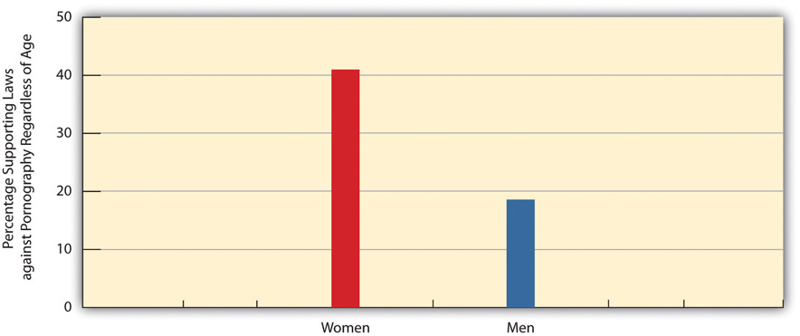
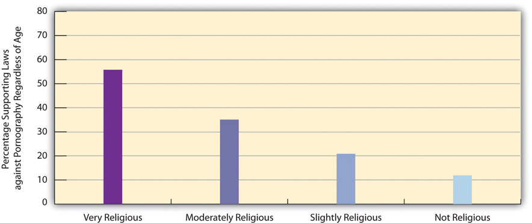
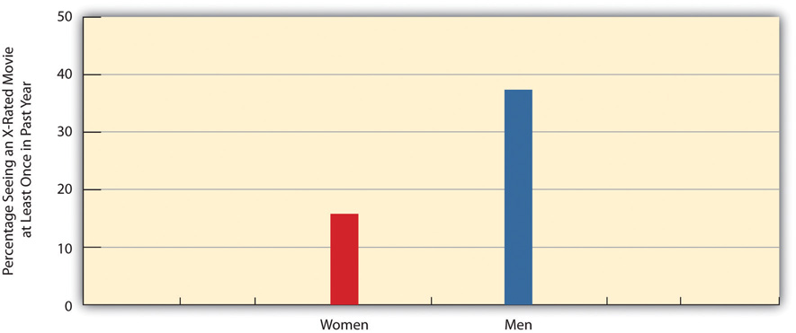
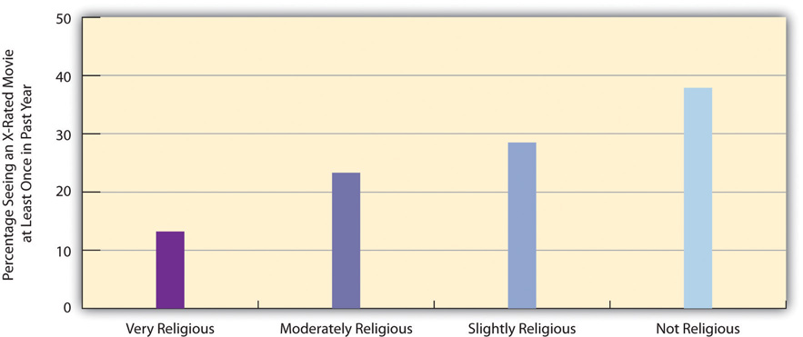

PornographyPrinted or visual materials that are sexually explicit and that are intended to arouse sexual excitement rather than artistic appreciation. may be defined as printed or visual materials that are sexually explicit and that are intended to arouse sexual excitement rather than artistic appreciation. This definition is fine as far as it goes, but it does raise many questions that underscore the difficulty of dealing with prostitution. For example, how “explicit” must a printed or visual material be for it to be explicit? Is a picture of a woman in a skimpy negligee explicit, or must she be fully unclothed? If a woman in a photo is wearing an evening gown that is very low-cut, is that explicit? If a young male gets aroused by seeing her cleavage, does that make the photo of her pornographic? If two people on network television are obviously beginning to have consensual sex just before a commercial begins (this is network television, after all), is that explicit and arousing enough to constitute pornography? If you answered no to this last question, what if some viewers did find this short portrayal of consensual sex to be explicit and arousing? Is their reaction enough for us to have to conclude that the scene they saw was indeed pornographic? How many people in fact have to find a printed or visual material explicit and arousing for it to be considered pornographic?
These questions suggest that it is not very easy to define pornography after all. Back in the 1950s, young males in the United States would leaf through National Geographic magazine to peek at photos of native women who were partially nude. Those photos, of course, were not put there to excite boys across the country; instead they were there simply to depict native people in their natural habitat. Another magazine began about the same time that also contained photos of nude women. Its name was Playboy, and its photos obviously had a much different purpose: to excite teenage boys and older men alike. Other, more graphic magazines grew in its wake, and today television shows and PG-13 and R-rated movies show more nudity and sex than were ever imaginable in the days when National Geographic was a boy’s secret pleasure. Beyond these movies and television shows, a powerful pornography industry now exists on the Internet, in porn stores, and elsewhere. Although Playboy quickly became very controversial, it is considered tame compared to what else is now available.
If things as different as National Geographic, Playboy, R-rated movies, and hard-core pornography show nudity and can be sexually arousing, what, then, should be considered pornography? Are at least some of the tamer pictures in Playboy really that different from the great paintings in art history that depict nude women? This question is not necessarily meant to defend Playboy; rather, it is meant to have you think about what exactly is and is not pornography and what, if anything, our society can and should do about it.
However we define pornography, sexually explicit materials, along with drugs, prostitution, and abortion, have been common since ancient times (Bullough & Bullough, 1977).Bullough, V. L., & Bullough, B. (1977). Sin, sickness, and sanity: A history of sexual attitudes. New York, NY: New American Library. Archeologists have uncovered sexually explicit drawings, pottery, and other artifacts from China, Greece, Japan, Persia, Peru, and other locations; these artifacts depict sexual organs and sexual behavior. Sexually explicit material appears in much writing left from ancient Greece and ancient Rome. “Vast quantities of material dealing with sex” (Bullough & Bullough, 1977, p. 161)Bullough, V. L., & Bullough, B. (1977). Sin, sickness, and sanity: A history of sexual attitudes. New York, NY: New American Library. remain from medieval Europe. The huge amount of pornography that exists today represents a centuries-old tradition.
Many people oppose pornography, but two very different groups have been especially outspoken over the years, as has been true about prostitution. One of these groups consists of religious organizations and individuals who condemn pornography as a violation of religious values and as an offense to society’s moral order. The other group consists of feminists who condemn pornography for its sexual objectification of women and especially condemn the hard-core pornography that glorifies horrible sexual violence against women. Many feminists also charge that pornography promotes rape by reinforcing the cultural myths discussed earlier. As one writer put it in a famous phrase some thirty years ago, “Pornography is the theory, and rape the practice” (Morgan, 1980, p. 139).Morgan, R. (1980). Theory and practice: Pornography and rape. In L. Lederer (Ed.), Take Back the Night (pp. 134–140). New York, NY: William Morrow.
The GSS asks, “Which of these statements comes closest to your feelings about pornography laws: (1) There should be laws against the distribution of pornography whatever the age; (2) There should be laws against the distribution of pornography to persons under 18; or (3) There should be no laws forbidding the distribution of pornography.” In 2010, about 31 percent of the public thought that pornography should be illegal for everyone, and 65 percent thought it should be illegal for people under 18; only 4 percent thought there should be no laws against pornography. Adding the last two percentages together, though, 69 percent thought pornography should be legal for everyone 18 and older.
Certain aspects of our social backgrounds predict our views about pornography laws. Two of the strongest predictors are gender and religiosity. Focusing on the percentage who favor laws against pornography regardless of age, there is a strong gender difference in this view (see Figure 9.16 "Gender and Support for Laws against Pornography Regardless of Age (%)"), with women more than twice as likely than men to favor these laws. Religiosity also predicts support for pornography laws regardless of age: People who consider themselves very religious are five times more likely than those who consider themselves not religious to favor these laws (see Figure 9.17 "Self-Rated Religiosity and Support for Laws against Pornography Regardless of Age (%)").
Figure 9.16 Gender and Support for Laws against Pornography Regardless of Age (%)
Source: Data from General Social Survey. (2010). Retrieved from http://sda.berkeley.edu/cgi-bin/hsda?harcsda+gss10.
Figure 9.17 Self-Rated Religiosity and Support for Laws against Pornography Regardless of Age (%)
Source: Data from General Social Survey. (2010). Retrieved from http://sda.berkeley.edu/cgi-bin/hsda?harcsda+gss10.
Pornography is so widespread and easy to access on the Internet and elsewhere that many people must be viewing it, reading it, and in general “using” it. Various data and estimates for the United States support this assumption (Diamond, 2009; Family Safe Media, 2011).Diamond, M. (2009). Pornography, public acceptance and sex related crime: A review. International Journal of Law & Psychiatry, 32(5), 304–314; Family Safe Media. (2011). Pornography statistics. Retrieved October 23, 2011, from http://www.familysafemedia.com/pornography_statistics.html. For example, pornography revenues amount to more than $13 billion annually (from the sale and rental of adult DVDs, the viewing of pornographic Internet sites, the purchase of adult videos on cable and in hotel rooms, payments for phone sex, visits in exotic dance clubs, the purchase of sexually explicit novelties, and subscriptions to and the purchase of sexually explicit magazines). An estimated 12 percent of all websites are pornographic. In addition, about 40 percent of Americans visit pornographic sites on the Internet at least monthly, and, according to the GSS, one-fourth of Americans, or almost 60 million adults, have seen an X-rated movie in the past year.
We saw earlier that gender and religiosity predict views about pornography laws. As you might expect, they also predict X-rated movie viewing. Men are more than twice as likely as women to have seen an X-rated movie in the past year (see Figure 9.18 "Gender and Viewing of X-Rated Movie in Past Year (Percentage Seeing a Movie at Least Once)"), while very religious people are only about one-third as likely as those who are not religious to have seen an X-rated movie.
Figure 9.18 Gender and Viewing of X-Rated Movie in Past Year (Percentage Seeing a Movie at Least Once)
Source: Data from General Social Survey. (2010). Retrieved from http://sda.berkeley.edu/cgi-bin/hsda?harcsda+gss10.
Figure 9.19 Self-Rated Religiosity and Viewing of X-Rated Movie in Past Year (Percentage Seeing a Movie at Least Once)
Source: Data from General Social Survey. (2010). Retrieved from http://sda.berkeley.edu/cgi-bin/hsda?harcsda+gss10.
Many feminists and other people oppose pornography because they believe it causes rape or other violence against women. This belief raises an important question: To what extent does pornography in fact cause such violence? The fairest answer might be that we do not really know. Many scholars believe pornography does cause violence against women, but other scholars conclude that pornography does not have this effect and may even help reduce sexual violence by providing a sexual outlet for men (Diamond, 2009; Weitzer, 2011).Diamond, M. (2009). Pornography, public acceptance and sex related crime: A review. International Journal of Law & Psychiatry, 32(5), 304–314; Family Safe Media. (2011). Pornography statistics. Retrieved October 23, 2011, from http://www.familysafemedia.com/pornography_statistics.html; Weitzer, R. (2011). Review essay: Pornography’s effects: The need for solid evidence. [Book review]. Violence Against Women, 17(5), 666–675.
These divergent views reflect the complexity of the evidence from studies of pornography. Many studies do conclude that pornography causes rape. For example, male students who watch violent pornography in experiments later exhibit more hostile attitudes toward women than those watching consensual sex or nonsexual interaction. However, it remains doubtful that viewing pornography in real life has a longer-term effect that lasts beyond the laboratory setting, and several experimental studies do not even find any short-term effects. In other types of research, rape rates have not risen in the US states that have made their pornography laws more lenient, and states’ rape rates are not related to their circulation rates of pornographic magazines. Further, rape rates have declined sharply since the early 1990s even though pornography is much more widely available now than back then thanks to the Internet and other technologies.
A recent review of the research on pornography and rape concluded that pornography does not increase rape (Ferguson & Hartley, 2009, p. 323):Ferguson, C. J., & Hartley, R. D. (2009). The pleasure is momentary…the expense damnable?: The influence of pornography on rape and sexual assault. Aggression & Violent Behavior, 14(5), 323–329.
Evidence for a causal relationship between exposure to pornography and sexual aggression is slim and may, at certain times, have been exaggerated by politicians, pressure groups and some social scientists. Some of the debate has focused on violent pornography, but evidence of any negative effects is inconsistent, and violent pornography is comparatively rare in the real world. Victimization rates for rape in the United States demonstrate an inverse relationship between pornography consumption and rape rates. Data from other nations have suggested similar relationships…It is concluded that it is time to discard the hypothesis that pornography contributes to increased sexual assault behavior.
Whatever pornography is or is not, many people find it disgusting, but many other people are more tolerant of it. In our discussion of prostitution, we examined the issue of whether it is proper for a democracy to ban a consensual behavior simply or mostly because many people consider it immoral. The same question may be asked about pornography (to be more precise, pornography that does not involve children), especially because it does not appear to cause violence against women. Even if it did cause such violence, efforts to stop it raise important issues of freedom of speech and censorship. In a free society, civil liberties advocates say, we must proceed very cautiously. Once we ban some forms of pornography, they ask, where do we stop (Strossen, 2000).Strossen, N. (2000). Defending pornography: Free speech, sex, and the fight for women’s rights. New York, NY: New York University Press.
This issue aside, much of what we call pornography still degrades women by depicting them as objects that exist for men’s sexual pleasure and by portraying them as legitimate targets of men’s sexual violence. These images should be troubling for any society that values gender equality. The extent of pornography in the United States may, for better or worse, reflect our historical commitment to freedom of speech, but it may also reflect our lack of commitment to full equality between women and men. Even if, as we have seen, the survey evidence shows growing disapproval of traditional gender roles, the persistence of pornography shows that our society has a long way to go toward viewing women as equally human as men.